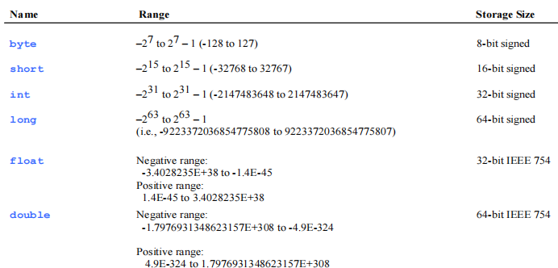

2 Elementary Programming¶
Identifiers¶
标识符：
- 不能是保留词
- 区分大小写（Int可以）
- 以字母、下划线、dollar开始但不可以是数字
variable¶
-
不区分定义和声明
-
不存在全局的变量，都在class里面
-
在一个方法内部定义的local变量不存在一个defaut value，会直接报出“编译时错误”
final vs. const¶
final
- 修饰 variable
- 变量不可改变
- 可以在 编译时候、运行时候、构造函数里初始化
- 修饰 类variable
- 表示这个变量不可赋为其他对象
- final Value v = new Value(); v = new Value(); //不允许！
- 修饰 method
- 表示函数不可以被重载
- 修饰 clase
- 整个 class 不能被继承
- class 内部的所有方法被加了 final 不可重载
命名¶
- 变量和方法：小写
- class：firstletter大写
- 常量：全部大写
data types¶

-
整型的范围具有可移植性
-
没有 sizeof()
从键盘读取数据的方法¶
- nextByte(),nextShort(),nextInt(),nextLong(),nextFloat(),nextDouble()
- 读取下一个的token但焦点不会移动到下一行
- 因此在nextint 后 无提供输入而 nextline 会读到空的 string
calculation¶
- 整数和小数的除法与 c 一致
- 所有涉及到小数的运算结果都是 approximate
- System.out.println(1.0 - 0.1 - 0.1 - 0.1 - 0.1 - 0.1);
- 展示 0.5000000000000001
- 指数运算与 python 一致
- System.out.println(Math.pow(2, 3)); 展示 8
- 可以小数负数等
数值¶
literal
- 当literal 超出了它类型能承担的范围，编译器报错
- double vs. float
- 出现小数的时候默认是 double， 强调了 F 则是 float
- System.out.println("1.0 / 3.0 is " + 1.0 / 3.0); displays 1.0 / 3.0 is 0.3333333333333333
- System.out.println("1.0F / 3.0F is " + 1.0F / 3.0F); displays 1.0F / 3.0F is 0.33333334
- 特殊的浮点数值
- 正无穷负无穷：Double.POSITIVE_INFINITY Double.NEGATIVE_INFINITY
- 用 Double.isNaN来判断是否是数字
- 科学计数法，e = *10多少次
- i ++ 同 c
展示 current time 算法¶
函数：currentTimeMillis()

类型转化¶
- 有 double 就都转 double
- 有 float 就都转 float
- 有 long 就都转 long
- 除以上，都转 int
- int->float, long->float, long->double 转换存在精度损失
强制类型转化¶
- round 四舍五入
- int round(float x)
- return (int)Math.floor(x+0.5)
- long round(double x)
- return (long)Math.floor(x+0.5)
- double x = 9.997
- int nx = (int)Math.round(x)
-
round返回结果是long类型，因此返回后还要加强制转换
-
特殊的，对于形式 x1 op= x2（如 x1+=x2)
- x1 = (T)*(x1 op x2)，T 为 x1 的类型
-
如
- int sum = 0;
- sum += 4.5;
- sum becomes 4 after this statement
-
java 要求显示的强制类型转换，否则报错
报错¶
- Undeclared/Uninitialized Variables and Unused Variables
- Integer Overflow
- Round-off Errors
- Unintended Integer Division


Selections¶
if-else¶
-
格式同 c
-
else 与最近的 if 匹配
-
要让else不和最近的 if 匹配：请加 {}
-
注意是逻辑错误！
-
java if (radius >= 0); { area = radius*radius*PI; System.out.println( "The area for the circle of radius " + radius + " is " + area); } -
第一行多余分号
boolean¶
-
bool：true or false
-
以下等价
- if(even == true)
- if(even)
- 以下错误
- if(even != 0)
-
bool和整数不可以相互进行转换
-
操作符
-
!
-
&&
-
||
-
^
-
区分 python
-
结合顺序
-
&& ||: 短路的方式求值
- 如果第一个操作数已经能够确定表达式的值，第二个操作数就不必计算了

switch语句¶
- 格式同 c
- switch 后表达式只能是：byte、short、char、int（java1.6），和string（java1.7）
- 注意！！不支持对 string 的判断
- 这里还是要注意 break，没break就是trace 的情况
Conditional Expressions¶
(boolean-expression) ? expression1 : expression2
优先级¶
- v++ v--
+-（正数负数）++v --v- 强制类型转换
- !
*/%+-加 减- < <= > >=
- == !=
- ^ (Exclusive OR)
- && AND
- || OR
- = += -= *= /= %=
4 Mathematical Functions, Characters, and Strings¶
感觉从这一章来说java跟python比较像
已知：PI, E
三角函数¶
- 格式：sin(double a), cos, tan, acos, asin, atan
- 使用
- Math.sin(0) returns 0.0
- Math.sin(Math.PI / 6) returns 0.5
- Math.cos(0) returns 1.0
- Math.cos(Math.PI / 2) returns 0
指数¶
- exp(double a)，log(double a)，log10(double a)，pow(double a, double b)，sqrt(double a)
- 使用
- Math.exp(1) returns 2.71
- Math.log(2.71) returns 1.0
- Math.pow(3, 2) returns 9.0
- Math.sqrt(4) returns 2.0
取整¶
- double ceil(double x)
- double floor(double x)
- double rint(double x)
- 最近的整数
- 如果是0.5，以double形式返回even（偶数的）的整数
- int round(float x)
- long round(double x)
min, max, and abs¶
- max(a, b) min(a, b)
- Math.max(2.5, 3) returns 3.0
- abs(a)
- Math.abs(-2.1) returns 2.1
- random()
- 范围 [0.0, 1.0)
- a + Math.random() * b 范围 [a, a+b)
Character Data Type¶
- char letter = 'A'; (ASCII)
- char numChar = '4'; (ASCII)
- char letter = '\u0041'; (Unicode)
- \u 表示十六进制
- 常用
-

-
强制类型转化
- int i ='a'; // Same as int i = (int)'a'；
-
char c = 97; // Same as char c = (char)97;
-
方法
- isDigit(ch), isLetter(ch), isLetterOfDigit(ch), isLowerCase(ch), isUpperCase(ch), toLowerCase(ch),, to UpperCase(ch)
String¶
The String type is not a primitive type. It is known as a reference type
- 方法
- length()
- charAt(index)
- concat(s1): 返回一个将这个字符串和 s1 字符串相连的结果
- s3 = s1.concat(s2) 等于 s3 = s1 + s2
- String s = "Chapter" + 2; // s becomes Chapter2
- toUpperCase()
- toLowerCase()
- trim(): 返回以一个两侧都是空白字符的字符串
- 以上叫做 instance methods（因为带有特定的string实例），否则叫做 static method
- 所有定义在 math 里面的都是静态方法
-
静态方法：referenceVariable.methodName(arguments).
-
java 的 length 计数和 index 计数与 c 一致
-
从控制台读取 string
- 直到遇到第一个空格或换行符分开
- Scanner input = new Scanner(System.in);
- String s1 = input.next();
- 扫描剩余所有字符串直到回车
- Scanner input = new Scanner(System.in);
- String s1 = input.nextline();
- 再用 charAt 函数来读取单个字母
- 会读取这一行的所有剩余内容（包括空格和换行符），然后把焦点移动到下一行
- substring
- note：所有找不到都返回 -1（区分python
- indexOf(ch): 找第一次出现ch的index
- indexOf(ch, fromIndex)：从 fromIndex 开始找balabaa
- indexOf(s): 找第一次出现 string s 的index
- indexOf(s, fromIndex)
- lastIndexOf(ch): 找 最后一次 balabala
- lastIndexOf(ch, fromIndex)
- lastIndexOf(s)
- lastIndexOf(s, fromIndex)
- 分离子串
- 空格分隔
- int k = s.indexOf(' ');
- String firstName = s.substring(0, k);
- String lastName = s.substring(k + 1);
- s.substring(0, k) 表示从 index 为 0 开始到 index 为 k
- s.substring(k) 表示从 index 为 k 开始到末尾
Formatting Output¶
-
System.out.printf(format, items); 同c
-
%b boolean, %c character, %d decimal integer, %f float
- %e 科学计数法, %s string
-
对 float 或 double 的精度控制同 c
-
索引
-
紧跟%，以$结束
-
翻书去翻书去我破防了
-
转换符
-
b: boolean
- n：换行符
- f：十进制浮点，显示9位有效数字四舍五入
- a: 16进制浮点
- e：指数（科学计数法
-
g：浮点，显示6位有效数字四舍五入
-
string 的格式化输出
-
"%s" 靠右
- String str = String.format("%7s", "hello")
- 输出 " hello"
-
"%-s" 靠左
- String str = String.format("%-7s", "hello")
- 输出 "hello "
-
整数格式化
-
"%04d": 长度没4在前面补0
-
：对8进制前面加 0，16进制前面加 0x¶
- +：结果总包含一个 + 号，- 同理
- 空格：正数前空格，负数前加 -
- ,: 用于十进制下三个数字之间分隔
-
(: 若结果负数则用括号括住且不显示符号
-
日期时间（不打算手搓ppt了、、、、对着Java书翻吧太无助了
5 Loops¶
-
基本按照 c
-
sentitial value 报警阈值（结束循环）
-
不要使用 浮点数 去做一个循环内的 equality checking，因为浮点数approximate不准确
-
同理，for 循环后面加上 ； 也是逻辑错误（跟ifelse一样）
-
关于 label
-
break
java label: { ... if(condition) break label; //退出block ... }
-
在这里 continue label 的作用和 break label一样
java 的简洁 for 循环¶
用于数组和容器
或
6 Methods¶
返回值¶
无返回值时 void
存在编译错误：编译器以为这个方法可以没有返回值

Reuse Methods from Other Classes¶
使用 ClassName.methodName 来reuse
call stack¶
了解 call stack 的过程，形参和实参在 stack 中分开

overloading¶
蛮常规
public static int main(int n1, int n2){
if(n1 > n2)
return n1;
else
return n2;
}
public static double max(double n1, double n2){
if(n1 > n2)
return n1;
else
return n2;
}
public static double max(double n1, double n2, double n3){
return max(n1, max(n2, n3));
}
ps: static 修饰 method
- 静态方法属于类，而不是类的实例（对象）。
- 通过类名直接调用，而不需要创建对象。例如，
ClassName.methodName()。 - 静态方法中只能访问静态变量或其他静态方法，不能直接访问实例变量或实例方法（因为实例变量和实例方法属于对象，而静态方法在类加载时就存在）。
Ambiguous Invocation¶
-
编译错误：编译器不能确定使用哪个方法（有两个方法都可以 possibly match）
-
如
- 定义函数：double max(int n1, double n2) 和 double max(double n1, int n2)
- 使用函数：max(1, 2)
local 变量的作用（负责/管理）范围¶
- local 变量：定义在一个方法里面的 变量
- 必须在使用前定义（声明 = 定义）
- 作用范围：被定义 - 包含这个变量的模块的 end
- 不可以在嵌套（nested block）中定义两次 local 变量
Case Study: Generating Random Characters¶
(char)(ch1 + Math.random() * (ch2 – ch1 + 1))
Main¶
main 方法只是一个很普通的方法

7 Single-Dimensional Arrays¶
分配在堆上（cpp在栈）
- 不可以 int a[100];
- Java中的[]运算符被预定义为检查数组边界，而且没有指针运算，就不能通过a+1得到下一个元素。
- 命令行参数，args[0]是第一个参数
- 程序名没有存储在args中
声明和创造¶
- declare
double[] myList;double myList[];not preferred- create
myList = new double[10];- 首位是 myList[0]，末尾是 myList[9]
- 一步内 declare 和 create
double[] myList = new double[10];double myList[] = new double[10];- 一种特殊的creat结果：anonymous array
- 没有显式的引用对象
new dataType[]{literal0, literal1, ..., literalk};-
new int[]{3, 1, 2, 6, 4, 2} -
array 被创造时就有一个默认的 value
- 数字型的 type 是 0
- char 是 '\u0000'
- boolean 是 false
- 可以直接通过 myList.length 来获取长度
初始化¶
- 一句话：
double[] myList = {1.9, 2.9, 3.4, 3.5}; -
注意：使用这种方法时必须一句话解决，以下报错：
- double[] myList;
- myList = {1.9, 2.9, 3.4, 3.5};
-
或者分开
- double[] myList = new double[4];
- myList[0] = 1.9;
- myList[1] = 2.9;
- myList[2] = 3.4;
- myList[3] = 3.5;
Initializing arrays with input values¶
Scanner input = new Scanner(System.in);
System.out.print("Enter" + myList.length + "values:");
for (int i = 0; i < mtList.length; i ++){
myList[i] = input.nextDouble();
}
random values:
enhanced for loop¶
Copying Arrays¶
- arraycopy
arraycopy(sourceArray, src_pos, targetArray, tar_pos, length);- arrays 的 copyOf()
int[] copiedLuckyNumbers = Arrays.copyOf(luckNumbers,luckyNumbers.length);- 第2个参数是新数组的长度，这个方法通常用来增加数组的大小
int[] copiedLuckyNumbers = Arrays.copyOf(luckNumbers,2*luckyNumbers.length);
- 新数组长度 > 被 copy 的
- 数值型：补 0
- boolean 型：补 false
传参¶
- 对于原始类型值 primitive type value 的参数
- 传递实际值
- 更改方法内部局部参数的值不会影响方法外部变量的值。
- 指除了 object 外的type
- 对于数组 array 类型的参数
- 对数组的引用被传递给该方法（类似指针）
- 方法体内发生的任何数组更改都会影响作为方法传递的原始数组
- 因为 java 中 array 以任意的顺序存放在 heap（用于动态分配内存） 中
当返回值是一个array¶
Search¶
- 线性搜索
- 二分法搜索
sort¶
-
selection sort
-
Arrays.sort 方法
-
java double[] numbers = {6.0, 4.4, 1.9, 2.9, 3.4, 3.5}; java.util.Arrays.sort(numbers); -
java char[] chars = {'a', 'A', '4', 'F', 'D', 'P'}; java.util.Arrays.sort(chars);
8 Multidimensional Arrays¶
delare/create¶
- declare
dataType[][] refVar;- create and assign reference
refVar = new dataType[10][10];- declare and create
dataType[][] refVar = new dataType[10][10];dataType refVar[][] = new dataType[10][10];

length¶
int[][] x = new int[3][4];
- x.length = 3
- x[0].length = x[1].length = x[2].length = 4
在定义的时候一定必须要有length
Ragged Arrays¶
对不同 row 有不同长度的 length
matrix.length is 5
matrix[0].length is 5
matrix[1].length is 4
matrix[2].length is 3
matrix[3].length is 2
matrix[4].length is 1
遍历¶
- 对 row: for(int i = 0; i < array.length; i ++){}
- 对 colomnn: for(int j = 0; j < array[i].length; j ++){}
9 Objects and Classes¶
class: datafield, constructors, method
constructor¶
- 使用 constructor 创建 object
new Circle();new Circle(5.0);- default constructor
- 当没有 constructor 被显式定义的时候，创建对象就使用默认 constructor
Circle rr = new Circle()
object¶
- 一次性定义和创造 object
Circle myCircle = new Circle()- 访问成员
myCircle.radiusmyCircle.getArea()- 这里
getArea()不是 static - 区分
Math.pow()
- 这里
datafield¶
- default value
- reference: null
- numeric: 0
- boolean: false
- char: '/u0000'
- 注意：java对一个方法里面的local value不会有default值
Garbage Collection¶
一个对象没有 reference 指向，就会作为垃圾回收掉
但不是 看到 null 就直接回收了 ，是看到系统资源去看情况回收

防止内存泄漏，pop 出来但 reference 还是指向它，要把reference 指向设置到 null
其他class¶
-
date class
-
random class
- 取seed不可以重复，经常取时间为种子
static¶
- 不受实参的影响
- static 方法只能访问 static 变量和方法
- instance 方法能访问 instance 和 static 变量和方法

感觉上是拿 static 作为全局的
private¶
- default
- 在一个package里面都可以访问
- public
- 在所有地方都可以访问
- private
- 只有在 class 内
- 对离开了这个class，object也不可以访问private 的成员
- private Constructor
- 不能创建类的实例，类只能被静态访问
- Math
- 只能创建一次，要控制对象，不可以 new
- 单例模式
- 只能被其他构造函数调用，用于减少重复代码
UML¶
-表示 private- 下划线表示 static
类和对象的生命周期¶
- 类
- 只要碰到了这个类，就开始
- 程序结束才消失
- 对象
- new 的时候开始
- 每 new 一次就会产生一个变对象
- reference 指向 null 的时候消失
传值¶
（没有指针这个说法，reference 传类似于地址的值）
还是强调 int 经过方法后不改变而 reference 改变，同上
object 经过方法后并没有发生变化
不可变对象和类 Immutable Objects and Classes¶
-
不可变对象
-
一旦对象创建了它内部就不可变->只有一种状态（被创建时的状态）
- 设置 private（不是必须的）或者不提供 set 方法只提供 get 方法
-
不需要进行保护性拷贝，因为拷贝始终都是原始的对象
-
不可变类
-
标注所有的datafields private
-
不提供任何有可能会返回 reference 的方法
- no mutator methods and no accessor methods
-
设计规则
- 不提供任何会修改对象状态的方法 mutator
- 保证类不被拓展，设置 final
- 所有域 final
- 所有域 private
- 对任何可变组件互斥访问
-
保护性拷贝
java public BirthDate getBirthDate(){ //return birthdate; //改为 return new BirthDate(birthDate.getYear(), birthDate.getMonth(), birthDate.getDay()); }
-
对于每一个不同的值都需要一个单独的对象
-
String 类也是不可变类
-
不允许自身被子类化，让类的所有 constructor 变为 private 或者 protected，添加公共的静态工厂来代替public的 constructor
-
常量池技术 Constant Pool, valueOf
-
java public class Complex{ private final double re; private final double im; private Complex(double re, double im){ this.re = re; this.im = im; } public static Complex valueOf(double re, double im){ return new Complex(re,im); } }
-
This¶
- 是对象本身的引用的名字，用于访问hidden data fields
- 一个常见的用法是在类的constructor中去调用其他的constructor
public class Circle {
private double radius;
public Circle(double radius) {
this.radius = radius;
}
public Circle() {
this(1.0);
}
public double getArea() {
return this.radius * this.radius * Math.PI;
}
}
对象构建的tips¶
- builder
- 多个 constructor 参数
- 重叠构造器

- 缺点：难阅读，导致认为的微妙错误
-
无参构造器
- 调用 setter 方法来设置每一个必要的参数和可选参数
-
静态工厂
- 代码的可读性更高，不必再每次调用的时候创建一个新的对象，可以返回原类型的任何子类型对象
- valueOf
- 单例对象
- 本质上唯一：文件系统、窗口管理器
- 有特权的客户端可以通过反射机制调用私有构造器，要抵御这种攻击可以修改构造器，要求创建第二个实例的时候抛出异常
- 枚举类方法：编写包含单个元素的枚举
package¶
-
方便管理组织，防止不同java文件之间发生命名冲突
-
发生命名冲突时，需要注意包的名字
-
java.util和java.sql都有Date类，如果：
import java.util.*;
import java.sql.*;
Date today; //编译错误
-
需要明确import java.util.Date
-
import不会递归，只会引入当前package下的直接类
-
默认import java.lang.*;太常用编译器会自动补上
-
可以导入静态方法和静态域，也可以导入特定的方法或域
-
import static java.lang.System.*;
-
import static java.lang.System.out;
-
编译器在编译源文件时不检查目录结构，但在运行时会因为目录结构找不到而报错
JAR¶
Java ARchive
The closest you can get to having a .exefile for your Java application.
- 创建
- jar -cvf filename.jar files
- 运行 JAR
- java -jar filename.jar
10 Thinking in Objects¶
这一课智云听完我是bk的，太难了
类之间的关系（不考，了解¶
aggregation 是一种特殊的 association，composition 是一种特殊的 aggregation
- association：两个objects之间有关系
- 可以一对一一对多多对一多对多
- aggregation：一个object可以有另一个object
- 符号：

- 右侧是拥有侧
- composition：一个object离开了另一个object不存在
- 符号：

- 右侧是存在的条件（父体）
wrapper class 封装类¶
对原始数据类型做封装
- 没有无参 constructor
- 所有实例自创建开始不可变，一旦new就不可修改
- 如 integer class 和 double class
- constructor
- 可以通过一个 primitive data type value或者是string来构造
- 对于整数：有最大值和最小值
- conversion methods：所有的数值型包装类实现了向其他数值类型转换的方法，比如doubleValue，intValue等等
- 静态工厂 valueOf
- parse 让string变成一个数据
- 原始数型和封装类会自动转化
- BigInteger and BigDecimal：处理打数值的包装类
String 类¶
-
new 一个对象
-
String s = new String();
-
是不可变类
-
String s = "Java";
s = "HTML";
-
创建了一个新的对象赋新值html
-
指 reference 指向的内容不可以发生改变
-
Interned Strings 驻留的
-

- 对于 s3，不会重新创建，只会将reference 指向s1
- 是s1!=s2，但s1.equal(s2)是true，equal只比较内容
- 节约底层空间
Constant Pool 常量池技术¶
- 方便快捷地创建某些对象
- 当需要new一个对象时，就可以从池中取一个出来（如果池中没有则创建一个），则在需要重复创建相等变量时节省了很多时间
- 常量池其实也就是一个内存空间，常量池存在于方法区中
-
JVM的编译器将源程序编译成class文件后，会用一部分字节分类存储常量。
-
在编译成.class时能够识别为同一字符串的,自动优化成常量
String s1 = "Hello";
String s2 = "Hello";
String s3 = "Hel" + "lo";
String s4 = "Hel" + new String("lo");
String s5 = new String("Hello");
String s6 = s5.intern();
String s7 = "H", s8 = "ello";
String s9 = s7 + s8;
s1 == s2 true;
s1 == s3 true; // 编译期进行了一定的优化
s1 == s4 false;
s1 == s5 false;
s1 == s9 false; // s9是两个变量拼起来的
s1 == s6 true;
-
对于上面这一段代码，s1，s2和s3是相同的(因为常量池技术)而s1和s4是不同的，s1和s9也是不同的，因为s4和s9不是常量，在编译期没有确定是不是常量
-
而s1和s6是相等的，和s5是不同的，因为s5位于堆中，intern方法会试图将Hello这个值加入常量池中，而此时常量池中已经有了Hello所以直接返回了其地址
-
Java中定义的包装类大部分实现了常量池技术，只有浮点数类型的包装类没有实现
-
其中Byte,Short,Integer,Long,Character只对-128-127的对象使用常量池
-
缓存
-
Double类型是没有缓存的，所以就会有如下结果
java Double x = 1.1; Double y = 1.1; x == y // -> false!
-
Integer利用缓存机制实现了常量池，缓存了256个对象，主要是常用的证书
-


string操作¶
- 不可变：创建一个新的出来替换
- 替换 replace
- 分割 split
- 匹配 match
- 正则表达式 regular expression

-
Convert Character and Numbers to Strings
-
也提供 valueOf
-
toString，new String
-
string格式化
String s = String.format(“%7.2f%6d-4s”,45.556, 14, “AB”);-

-
不以null为结尾
- Java中的String不可改变，是final类型
- 在String池中维护
- 比较是否相同的时候要用equals方法，不要用==
- 使用indexOf等方法去查询元素的位置
- 使用subString方法去获取子串，因为==比较的是引用的对象，equals比较的是String所代表的值
- +运算完成了对String的重载
- 使用trim方法删除首尾空格
- split方法支持正则表达式
- 不要存储敏感信息在String中
StringBuilder and StringBuffer¶
-
在 string 的基础上可以对 string 的内容进行修改，灵活
-
Builder和Buffer拥有toString，capacity，length，setLength和charAt等方法
-
三者的比较
-
在执行速度上，StringBuilder>StringBuffer>String
- 比如对于String s = "abcd"，如果我们执行s = s + 1实际上执行之后的s跟原本的s不是同一个对象而是生成了一个新的对象(因为String是不可变的)，原来的对象被垃圾回收了，导致String的执行效率非常低
- Builder是线程非安全的，Buffer是线程安全的
- 单线程 builder，多线程 buffer
枚举类(Enum)¶
- 一个功能齐全的类，里面的instance已经定义好了
- 通常常量用
public final static来定义，在枚举类中可以用如下方式定义
-
ordinal() 返回一个序数，从 0 开始
-
可以根据 ordinal 进行排序
-
可以用 valueOf 得到枚举实例
-
Light L = Light.valueOf("RED");
-
java enum Seanson{ SPRING, SUMMER, AUTUMN, WINTER; public static Season valueOf(int ordinal){ if(ordinal<0 || ordinal >= values().length){ throw new IndexOurOfBoundsException("Invalid ordinal"); } return values()[ordinal]; } } -

-
-
enum类型可以关联不同的数据，也可以添加任意的方法和域，来增强枚举类型

答案 4 PLUS 2 = 6
等等

这个valueOf填不出来
11 Inheritance and Polymorphism¶
别学了呜呜呜呜呜呜呜呜呜呜呜，我想回去睡觉
继承¶
public class Faculty extends Employee 表示faculty继承自employee
superclass 父类
-
父类的构造函数可以被继承吗
-
不
-
子类需要调用父类的构造函数
-
父类的构造函数被显式或隐式的调用
- 子类可以使用super来调用
- 当没有显示的声明super时，就默认super是一个无参数的构造函数
- 关键词 super：隐式调用父类的构造函数；reference 访问方法或成员
- 必须用super
- 构造链 constructor chaining
- 使用到子类1->找子类1的constructor->找父类的constructor->找父类的父类的constructor（直到没有父类）->执行父类的父类的constructor->执行父类的constructor->执行子类1的constructor
- error：有参无参要一致

调用 apple 的构造函数是无参的，要先调用fruit的构造函数，蛋fruit的是有参的

原因：没有使用super去调用，默认无参
- 定义一个新子类
- 增加成员变量或方法
-
重写新方法：override
-
override
- 区分（函数的重写叫做overload，继承关系里面要修改子类实现叫做override）
- override 有一模一样的名字和参数，发生在继承中
- 条件
- 这个父类的方法可以被子类访问到
- private static 不可以被 overridding
- 如果没有overridding，父类和子类的相同的函数没有关系（不存在多态）
- override注释，告诉编译器这是一个重写父类的方法
@override
Polymorphism 多态¶
一个父类变量可以指向一个子类的对象
- 一个类可以当成是一个type
- 一个对象去调用方法，要看是哪个对象再去实现
- 多态意味着父类可以被引用作为一个子类来使用
- Dynamic Binding 动态绑定
- 如图是一个继承关系，c1是c2的子类，往后类推
- 这里我们要先把cn看成是 object

- 对Cn o = new C1():
-
JVM会从C1开始寻找某个方法P直到找到一个具体的实现为止，然后搜索停止，调用第一个找到的方法
-
匹配 Method Matching vs. binding
- 匹配：根据signature 编译时候匹配
- 找尽可能越近越好的参数进行匹配
- 绑定
- 在运行的时候去动态绑定

m(x) 使用匹配，使用哪个 tostring 是动态绑定
-
generic programming 泛型编程
-
说来一通没怎么听清楚就说这个不是很准确的定义之后后面会再多具体介绍
-
Casting Object 类型转换
-
在继承关系中可以隐式的转换
- m(new Student());
-
先显式转换（否则编译器不认识会报错，因为到运行才知道）Student b = (Student)o;
-
当从基类转换到子类的时候必须有显示的声明，但不一定总是能成功
-
instanceof 操作：检查，一个object是不是某一个类型的
-
比如说 Object myObject = new Circle();object实际不是object二是circle
-
这个时候对object强制类型转换成circle就转换不了了
-
操作方法：
-
如果myOject不是Circle，就输出balabala
-
java if (myObject instanceof Circle) { System.out.println("The circle diameter is " + ((Circle)myObject).getDiameter()); ... }
-
-
如果类型转化失败，会抛出异常
- 为了避免抛出异常，先使用instanceof去判断，再类型转换
-
构造函数初始化顺序
-
初始化对象的存储空间为零或null值；
- 调用父类构造函数
- 按顺序分别调用类成员变量和实例成员变量的初始化表达式
- 调用本身构造函数内容
class Basel{
public int a = 1;
public Basel(){
test();
}
public void test(){
System.out.println(a);
}
}
public class Child extends Basel {
public int a = 123;
public Child(){
}
public void test(){
System.out.println(a);
}
public static void main(String[] args){
Child c = new Child();
c.test();
Basel b = c;
System.out.println(b.a);
System.out.println(c.a);
}
}
输出：
0
123
1
123
好难.....

父类往上找，一直找到变量里跟它关系最大（相关度最高）的父类，运行它，结束。如果有两个父类跟他关系一样大，就选择更小的父类（更靠近他的父类）。
-
equals 方法
-
默认定义 default implementation
-
java public boolean equals(Object obj) { return this == obj; } -
两个reference是不是指向同一个东西
-
-
重写
- 内容是不是一样的

-
protected 修饰符
-
可以被一个package里面的类访问，在不同package里面如果是子类想要访问就也可以被访问
- Protected的一个用法：模板方法（动态绑定

-
子类不会 waken 它的 accessibility
-
final 修饰符
-
变量不可以被修改，方法不能再被重写，类不可以被继承
Nested Class (嵌套类)¶
outer 类，inner 类
-
内部类可以直接使用外部类的private变量，外面看不到，可以完全隐藏
-
可以实现封装
-
内部类是编译器的概念，对于jvm来说不知道
-
有内部类的时候编译时生成 class 文件的时候会产生多个 class 文件，没有一个类定义就多产生一个 class 文件
-
分类
-
静态内部类 (Static Inner Class)
-
和一般的类差不多
-
内部类可以访问外部类的 static 成员方法，但不能访问其他成员方法
-
public 的静态内部类可以在外面使用
-
不需要通过外部类的对象来创建
-
java Outer.StaticInner si = new Outer.StaticInner();
-
-
成员内部类
-
去 static
-
与外部类的紧密关系，可以访问到外部类的一般方法
-
在外部使用与静态内部类不同：要先new外部类，再new内部类，成员内部类对象需要与一个外部类对象相连，相当于有一个指向外部类的reference
-
java public static void main(string[]args){ Outer outer = new Outer(); Inner inner = outer.new Inner(); }
-
-
方法内部类 (Local Class)
-
匿名内部类 (Anonymous Class)